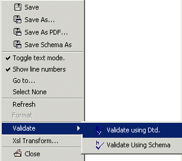

4.3 Validating a Document using a DTD
Validate an XML document using a DTD; check if an XML document conforms to
a DTD, with the
Validate Using DTD menu item in the Validate sub-menu
of the document pop-up menu.
Figure 4.3.1 Pop-Up Menu>Validate>Validate Using DTD
|

|
A window frame below the XML document displays the errors generated
by validating the document using a DTD.